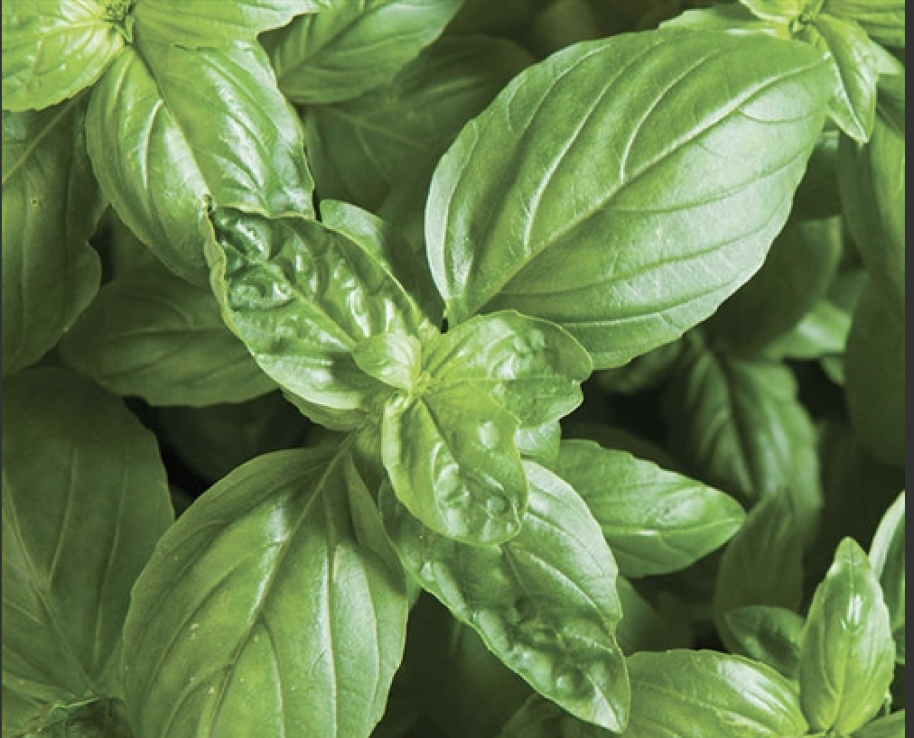

Mother of Thousands
Kalanchoe Daigremontiana
Mother of thousands is of the Crassulaceae family and is related to jade plant and Flaming Katy (Kalanchoe blossfeldiana).
It is often confused with the chandelier plant (Kalanchoe delagoensis) but shares similar growing conditions and traits. According to mother of thousands
plant info, Kalanchoe daigremontiana has lost the ability to produce seeds and only reproduces from plantlets. As it is an abundant producer,
it can quickly get out of hand when dropping these baby plantlets.This succulent plant can resist drought, though performance is better when regularly watered.
Like its relatives, Kalanchoe daigremontiana, does not need frequent fertilization.
Philodendron
Philodendron Bipinnatifidum
Philodendron bipinnatifidum is a tropical plant that is usually grown in full sun,
but can tolerate and adapt to deep shade. It grows best in rich, moisture-retentive soil that can be slightly alkaline.
However, it cannot tolerate high salt concentration in soil. It is capable of supporting itself at massive heights by producing
tree-like bases. However, it will exhibit epiphytic characteristics if given the opportunity to attach itself to a nearby supporting tree
and climb upon it. The trunk of this plant can send down many strong aerial roots that not only give support to the overall plant mass,
but also serve to absorb water and nutrients from the soil.

Basil
Ocimum Basilicum
Basil, also called great basil or Saint-Joseph's-wort, is a culinary herb of the family Lamiaceae. Basil is native to tropical regions
from central Africa to Southeast Asia. It is a tender plant, and is used in cuisines worldwide.Depending on the species and cultivar, the leaves may taste
somewhat like anise, with a strong, pungent, often sweet smell. There are many varieties of basil, as well as several related species or hybrids also called
basil. The type used commonly as a flavor is typically called sweet basil, as opposed to Thai basil,
lemon basil, and holy basil. While most common varieties of basil are treated as annuals, some are perennial in warm,
tropical climates, including holy basil and a cultivar known as "African blue basil".
Tomato Plants
Solanum Lycopersicum
The species originated in western South America.The Nahuatl (Aztec language) word tomatl gave rise to the Spanish word tomate, from which the English word tomato
derived. Its use as a cultivated food may have originated with the indigenous peoples of Mexico.The Spanish encountered the tomato from their contact with the
Aztec during the Spanish colonization of the Americas and brought it to Europe. From there, the tomato was introduced to other parts of the European-colonized
world during the 16th century.
Felt Bush
Kalanchoe Beharensis
Kalanchoe beharensis (Velvet elephant ear) - This is a slow growing succulent tree-like shrub can grow to an eventual height of 12 ft. with an
equal spread though is typically seen much smaller. It has thick stems that are covered sharp angled leaf scars that likely evolved to protect
the stems that hold large, undulated and folded, olive-green, slightly-triangular leaves covered in sort brown stellate (branched) hairs that gives
the leaves a soft, velvety texture. Once mature, it produces small, greenish yellow flowers in winter. Plant in full sun or light shade. It is frost
tender and needs protection much below 30° F and is drought tolerant. A great sculptural succulent for the succulent garden or in a large pot.
The species was originally discovered near Behara in Madagascar but is now recognized as widespread in southern Madagascar.
Christmas Cacti
Schlumbergera
Schlumbergera is a small genus of cacti with 6-9 species found in the coastal mountains of south-eastern Brazil. Plants grow on trees or rocks in
habitats that are generally shady with high humidity, and can be quite different in appearance from their desert-dwelling cousins. Most species of
Schlumbergera have stems which resemble leaf-like pads joined one to the other and flowers which appear from areoles at the joints and tips of the stems.
Common names for these cacti generally refer to their flowering season. In the Northern Hemisphere, they are called Christmas cactus, Thanksgiving cactus,
crab cactus and holiday cactus. In Brazil, the genus is referred to as Flor de Maio (May flower), reflecting the period in which they flower in the Southern
Hemisphere.
Flaming Katy
Kalanchoe Blossfeldiana
Kalanchoe blossfeldiana is a glabrous, bushy, evergreen and perennial succulent plant which (in 2–5 years)
can reach an ultimate height of between 30–45 cm (12-18 in.) and an ultimate spread of between 10–50 cm (4-20 in.).
K. blossfeldiana has a round habit and a moderate plant density; its growth rate has been described as 'slow'. The plant has green,
shiny and textured glossy foliage which stays green all year round. The scallop-edged and ovate leaves are arranged in an opposite/subopposite
fashion, are simple in type with crenate margins and an oblong shape.
Devil's Backbone
Pedilanthus Tithymaloides
The plant is native to the American tropics but only hardy in USDA zones 9 and 10. It makes a superb houseplant with its 2-foot tall stems,
alternate leaves and colorful “flowers” which are actually bracts or modified leaves. The leaves are lance shaped and thick on wiry stems.
The bract color may be white, green, red or pink. The plant is a member of the spurge family. No devil’s backbone plant info would be complete without
noting that the milky sap may be poisonous to some people. Care should be exercised when handling the plant.